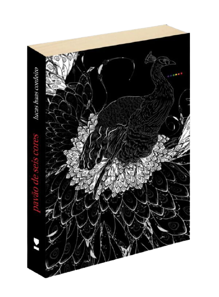

Sobre
nota do editor
"Os 32 textos apresentam em comum o fato de terem sido encontrados em uma pasta, descoberta por Diógenes Maciel, ex-jogador de futebol do Iraty Sport Club e estudante de Teorias Comparadas de Rigor Razoável & Instrumental em Gêneros Criados por Vias Cirúrgicas (TCORRIGE - VC). O aluno em questão informou ter recebido o material de um namorado de longa data, um agente policial que não gostaria de ver aquele conjunto tão exótico ficar esquecido, soterrado sob produções de menor valor literário."
Resenha de Guilherme Gontijo Flores
doutor em Letras Clássicas pela USP
doidos, drogados, tarados, fetichistas, assassinato, curitiba. poderia ser um resumo, ou imitação de dalton trevisan, vampirismo literário, quem sabe? acho é que lucas haas cordeiro matizou, neste seu pavão, uma trama furta-cor, atravessada por diversas personagens alucinadas (de luz e de loucura), numa linguagem também furta-cor,
o que aqui brota demanda muito, por vezes hesitamos no que estamos lendo, no que pode estar acontecendo ao redor. não é fácil escrever assim. alguém, na pressa, poderia até pensar “tudo o que fica é repetição. nada enquanto narrativa, realmente.” não será fácil pro leitor desavisado. atente. uma pena pode estar na tua mão.
Resenha de Daniel Lacerda
doutor em Estudos Literários pela UFPR
O que este Pavão de Seis Cores, segunda prosa de Lucas Haas Cardoso, tem, sim, em comum com a primeira, eis Vozes para a Fuga (2015): a fragmentação narrativa – formantes breves, rompendo com a linearidade do enredo, intitulados com os nomes das personagens ;a marginalidade destas suas personagens – bêbados, drogados, maníacos compulsivos,etc.; o cenário de sua Curitiba natal.
O que, não, o Pavão não guarda de semelhança com o primeiro Lucas Haas Cordeiro prosador: a parataxe dominante no fluir narrativo. Lá, talvez, mais os fatos em si (the tale);
os períodos curtos, rompendo, na própria sentença, com a linearidade verbo-sujeito- predicado da sintaxe, soando esta mais afim à poesia do que à prosa – afinal, de poeta se trata: vide o seu Sussurro e Codeína (2007) coletânea de poemas- drops de uma dicção afim à poesia marginal dos anos 70 de um Paulo Leminski, ou de uma Ana Cristina César.
O que pode a prosa pós proust-joyciana? O que pode, no diluído bazar-de-tudo da pós-modernidade, um novo romance? A essencialmente semiótica ficção paratática de Lucas é uma ousada resposta a esta pergunta.